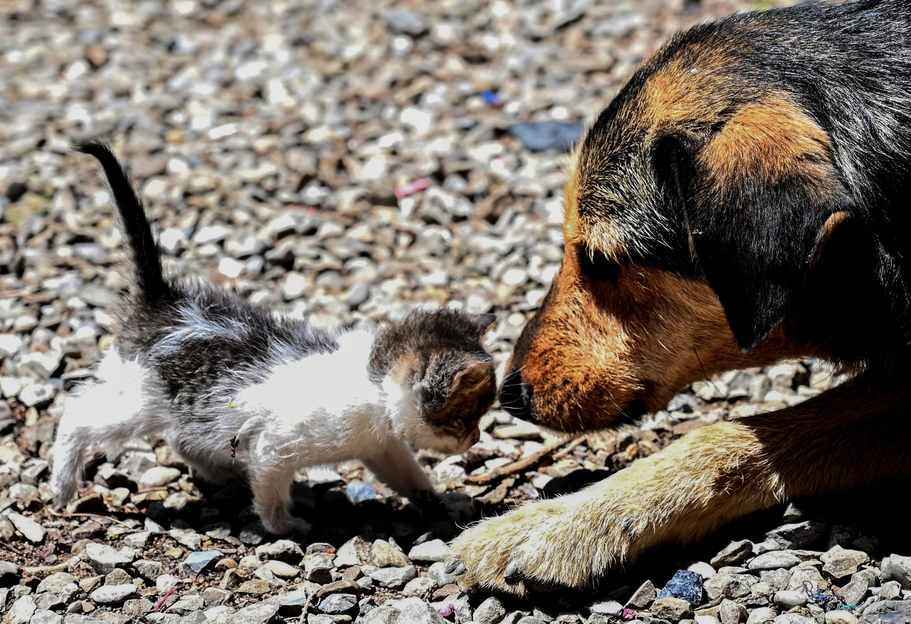

The Philippine Animal Welfare Society
Personally, I chose to support PAWS because it focuses on eliminating problems like animal homelessness that can potentially affect the lives of these animals. As an animal lover, I found this organization to be very beneficial for unfortunate animals that were not given the right treatment by their owners. Speaking of which, another reason I support this organization is because it provides rescued animals another opportunity to feel safe in a home with people who can actually take care of them. Lastly, this organization has spaying or neutering services, which is the removal of an animal's reproductive organ. Although it may sound painful and inhumane, this is proven to be beneficial because it can prevent diseases like testicular cancer and occurences of the animal's offspring to being homeless.
